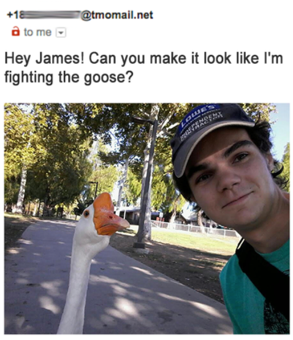

Solving the wrong problem
Many people have great ideas and solutions! But, does this really solve the right problem? Oftentimes the real problem is not what you expect it to be. This is why many ideas never become successful products and services.
They simply do not solve the real problem.
Ask the right questions
Chances are you know James Fridman. He is a master with Photoshop and takes requests from the public to correct their pictures.
He intentionally interprets the questions incorrectly and creates hilarious solutions :)
It sounds very logical: ask the right questions. Check if the problem really exists. And if it does, what the possible solutions are. Do this by asking real people for their opinion. Let them speak out!
Get insights fast
Chingu Online offers a place to get your ideas verified fast. Thousands of real people are ready to answer your questions. Within a couple of days you understand if you are solving for problems that really exist. And more importantly, that are worth fixing.
Your opinion is valuable
Help these startups and tell them what you think.
Oak processionary
A possible solution to keep your family safe.
Projext X
A possible solution to keep your family safe.
Project Y
A possible solution to keep your family safe.